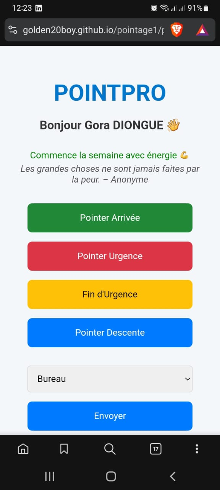
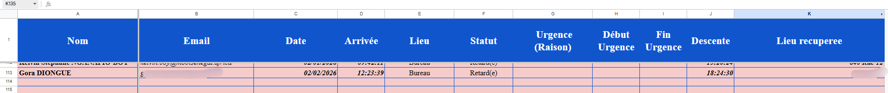
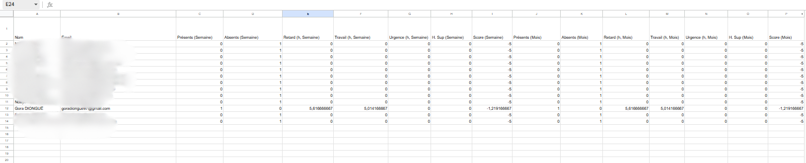
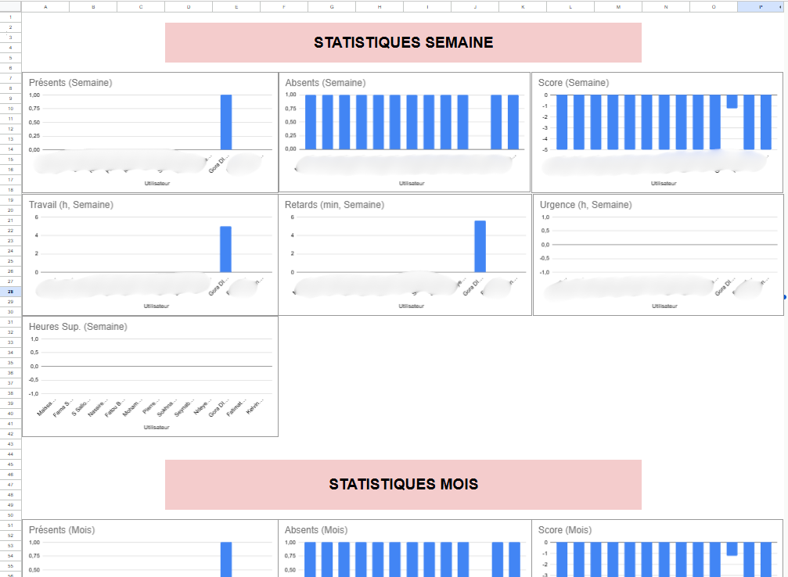
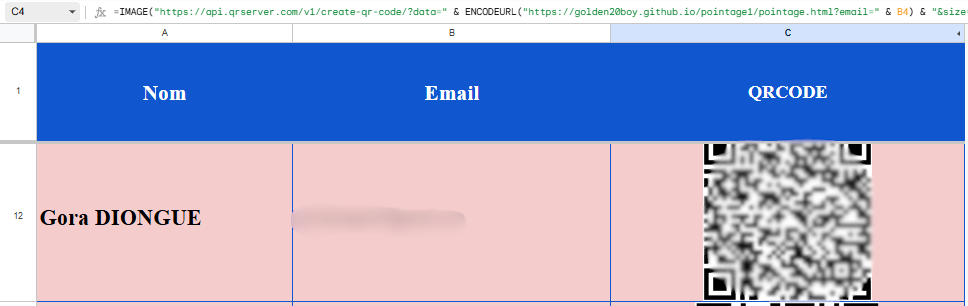

POINTPRO — Pointage QR Code automatisé
Solution de pointage web (mobile-first) déployée via GitHub Pages et connectée à Google Sheets grâce à Google Apps Script. Chaque employé scanne un QR Code personnel pour pointer en 1 clic.
Contexte
À mon arrivée, l’entreprise ne disposait pas de système de pointage. L’objectif était d’avoir une solution simple, rapide à adopter, et exploitable pour le reporting (présences, retards, urgences, heures).
Fonctionnalités
- QR Code personnel contenant un lien (paramètre email)
- Actions : Arrivée, Urgence (raison), Fin d’urgence, Descente
- Contrôles : pas d’urgence/descente sans arrivée, anti-doublon, messages utilisateur
- Géolocalisation optionnelle + récupération du lieu (reverse geocoding)
- Feuilles : Utilisateurs, Pointage, Liste de présence, Statistiques, Graphiques
- Stats semaine/mois + score + classement
- Emails automatiques hebdomadaires et mensuels
Technologies
- Frontend : HTML / CSS / JavaScript (responsive)
- Backend : Google Apps Script (doGet Web App)
- Data : Google Sheets (stockage + reporting)
- Déploiement : GitHub Pages
Liens
- Démo : Ouvrir l’application
- Code : Repo GitHub
Captures





Note confidentialité : sur une version production, l’URL QR peut utiliser un identifiant (token) au lieu de l’email.